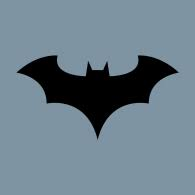
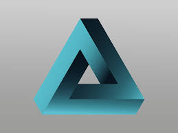

AbedTati is a specialized personnel when it comes
to system design and maintenance. We thank him very much and wish that he will continue with that spirit.

Jobsek Solution Limited
AbedTati is high skilled in developing best systems,
that run in all machines. We thank him for his superknowledge in systems.

Wambatant Solutions Limited
Best designer and developer we would like to recommend is AbedTati.
He is the expert in systems design and monitoring as it is being used.